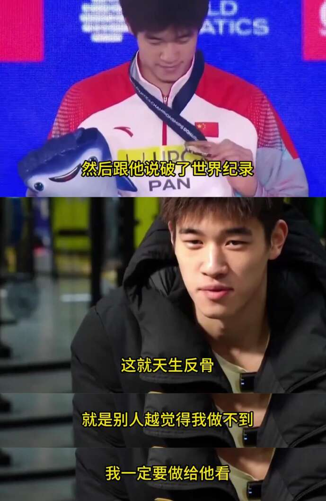
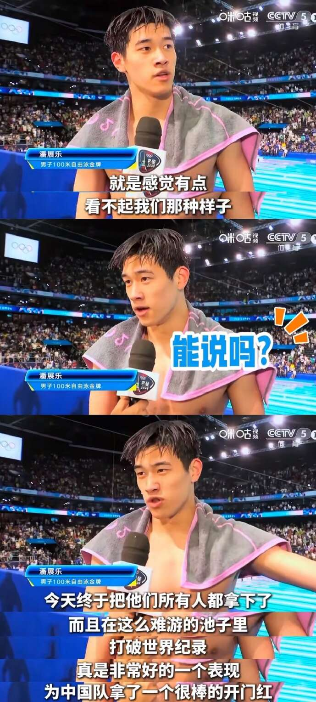
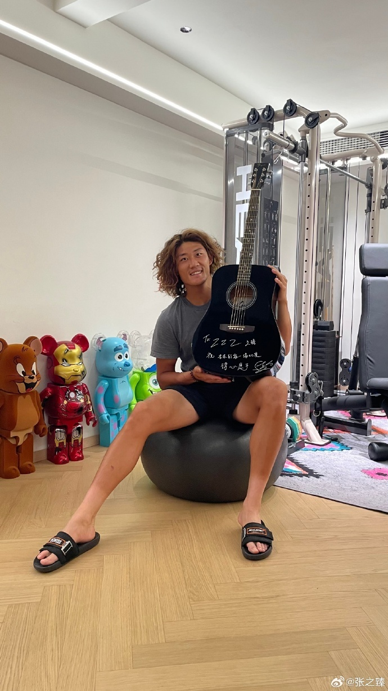
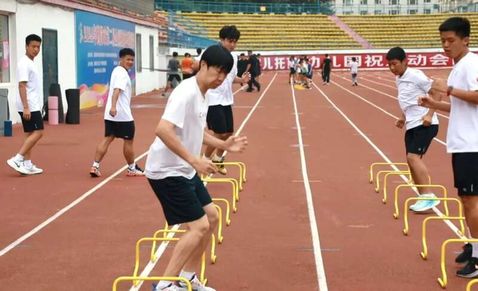
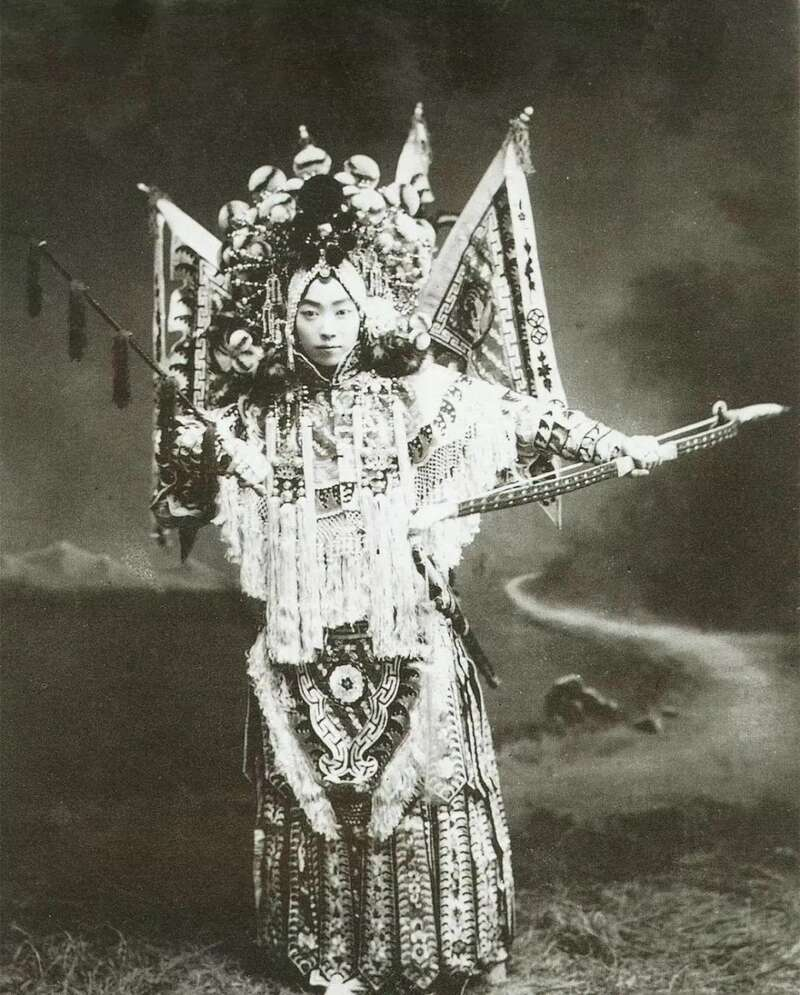
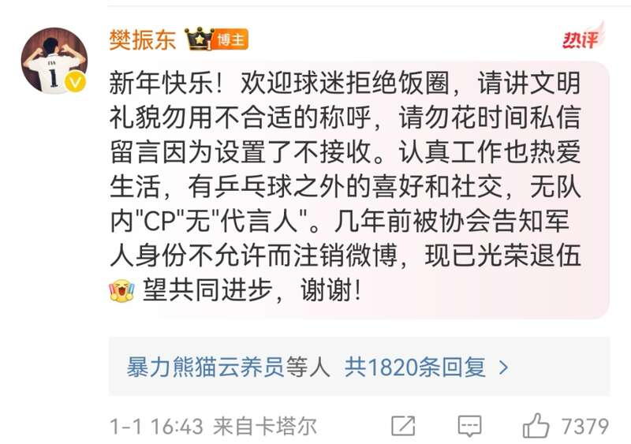

潘展乐，又“口无遮拦”了。
这也不是他近期第一回那么耿直。先前在巴黎，男子100米自由泳决赛后吐槽美国对手查尔莫斯“不理人”，后来发现是误会，还特地友好地互换泳帽澄清了一下。
不过这一回，被潘展乐“怼”的人不仅是咱同胞，还是他的浙江老乡，华少。
事情的原委其实并不复杂。华少近期主持了一档名为《冠军来了》的对话类节目，邀请多名在巴黎奥运夺金的中国健儿，或现场或连线，聊人生、聊颜值、聊八卦，似乎就是不聊体育。华少设定了一个圆梦环节，通过其娱乐圈人脉来帮助体育明星实现一个“追星梦”，通常的操作是先问“你最想去看谁的演唱会”，然后轻松拿捏。节目有爆点、有热搜，社交平台和媒体也乐于看到有话题，运动员能被喜欢的明星“翻牌子”，被喜欢的明星也乐于收下一波流量，体育明星和娱乐明星的粉丝更是皆大欢喜，看起来是稳稳的多赢。
直至遇见了潘展乐。
当华少亲切地说“问问乐乐，有没有想要去看的演唱会呢”的问题时，潘展乐冷冷答道：“我只想回家好好休息一下。”
冷场了，翻车了。意料之中的热搜没了，倒是这个采访名场面被广为传播。其实这个事背后的逻辑并不复杂，我们也相信当事各方都是出于善意，但这个事情背后所传递的一些信息，却不得不令我们深思：
作为奥运冠军的潘展乐，当他想去看一场喜欢的演唱会，为什么要被称为“圆梦”？
节目无恶意，但透着娱乐圈骨子里的优越感
当然，我相信华少的主观意图是好的，而动辄想要炫耀自己的人脉，本来也是没那么红的中年娱乐圈人士的通病，没太大毛病。再说，华少也的确没在吹牛。之前黄雨婷许愿要听十个勤天的演唱会，华少立即说已经提前给他们打电话了，别说演唱会了，就是单独为黄雨婷开唱都没问题。原以为潘展乐最多回答个升级的版本，哪怕你说是玛丽亚·凯莉（“牛姐”的确九月份要在北京开唱了），无非就是先应承下来事后帮你搞票子去嘛，这有啥难的？
但访谈类节目，首先所有问题都应该有一个融会贯通的体系，引导或辅助受访者娓娓道来，最终服务于节目要展示的主题。可在当下信息化碎片的时代里，主持人需要的不是专业水准，而是造梗能力。于是你再重温华少的这一问之前，他抛给潘展乐的所有问题，看似东拉西扯杂乱无章，其实每条都直奔某个热搜、新梗，或者爆款短视频的标题而去的。

“标标准准地用家乡话说一下咱们潘展乐三个字”“排个名，（游泳队男选手里）第一名谁最帅”“如果要用一种动物比喻自己，你会选择什么呢”“最近有人说你撞脸何润东，你看到了吗”——但他似乎没碰到过潘展乐这种硬茬，愣是一句都没落入华少的圈套里。作为旁观者看，潘展乐的涵养已经够好了。
华少倒不是犯了什么十恶不赦的错误，但我觉得，骨子里处处透露着娱乐圈“高人一等”的优越感，至少娱乐圈凌驾于体育圈之上的优越感。
首先是主次不分。既然是一档邀请奥运冠军的访谈活动，那在奥运会仍在举办的当下，以谁为主，一目了然。换言之，所有程序的设定、问题的抛出，你都该是为了凸显奥运冠军这个主角而为之，以他/她为中心散发开。他/她讲为主，你问为辅，而不是用一连串不上道的问题企图牵着人家的鼻子走。从观众角度，至少在现阶段，我们就乐于看着潘展乐嘚瑟、炫耀、真性情啊，多少都不为过。奥运冠军，四年一回，不就应该这样被宠着的吗？
最致命的错误，我觉得，还是提前预设了“体育明星去追娱乐明星”这样的从属关系。

当然，我们在平时经常看到体娱两界的明星良性互动，隔空加油打气，甚至亲自来到对方的比赛/演出赛场，“文体两开花”的交流当然值得鼓励。可这其中并不存在谁更尊贵、谁更高级的问题，大家都是深受人民群众喜爱的专业行当从业者，都可以在国际舞台彰显我们国家的风范。况且当下是奥运会如火如荼举办的运动季，潘展乐更是集万千宠爱的当红小生，趁着这个时间点鼓捣他去给娱乐明星做粉丝，还“求票”？应该是反向操作求潘展乐联动才合理吧。

张之臻晒出周杰伦送的签名吉他
看看周杰伦和张之臻的互动，几个月前周董就在社交网络上表达了对张之臻的支持，张之臻也大方回应。在奥运会历史性摘得混双银牌后，张之臻晒出了周杰伦赠送的签名吉他——这才是良性的、平等的互动，不是谁蹭谁的热度，更不是谁在追谁的星，而是两个互相欣赏的男生之间，用自己的方式表达着对对方的喜爱。
偏见从何而来？社会分工更精细，老观念要改了
所谓“劳心者治人，劳力者治于人”，大小我们都学过这句区分脑力劳动和体力劳动的古言。但这是出自2000多年前的《孟子》，社会分工早已不像封建社会时那般简单粗放了。就算往前追溯半个世纪、20年甚至10年，你会发现全社会的从业形态都有了天翻地覆的变化，对于行业、工种的固有认知，需要实时更新。
就譬如，我们“80后”“90后”这一代，在社会财富还不算丰饶的上世纪末，身边被拉去进体校、做运动员的，很容易陷入几种常见的归类：学习不好，靠常规路径升学很困难的；家里面穷，想走体育路线“吃公家饭”的；即便没有明显的问题，也会被扣上“头脑简单四肢发达”的帽子。在我们的童年记忆里，体育课为文化课让路是惯常套路；但凡教练找家长说“你家孩子是个好苗子”，得到的答案也多半是“我们还是以学习为重”。

我们传统认知中的体校，晒得黝黑，吃苦耐劳。
在很长一段时间内，竞技体育并不是常规的、足够说服力的成才路径，在世俗的眼光的里属于“剑走偏门”，至少是低于“高考→大学→就业”这条常规路线的。这也并不奇怪，在市场化程度并不高、体育商业价值未被充分开发的年代，运动员虽然衣食无忧，但收入待遇并没有显著高于普通人。再加上运动生涯黄金期短，“青春饭”吃完后半生得不到保障的例子比比皆是，于是又多了一层对职业运动员路线的“妖魔化”。
反观娱乐界，或说狭义上的演艺界，过往对于从业者的综合素质要求颇高，这也是为何我们敬佩“德艺双馨”的老艺术家的原因。且不说新中国成立之前舞台上的那些“角儿”，新中国成立后，有的能登堂入室为国家领导人演出，有的能赴前线慰问演出甚至牺牲在战火里。每个行当、每个年代都在“造星”，但造出的是那种所有人心悦诚服、台上台下表里如一，堪为国人做表率的明星。电影电视等大众媒介开始普及的年代，知名演员也常是普通人仰望的对象，举手投足，言谈举止，在人堆中一站就能认出来的那种。

早些年的艺人门槛是很高的，不信请看梅兰芳先生。
于是，在刻板印象中，靠脸吃饭（此处并非贬义）的演艺界明星是端庄、得体、有文化的象征，而运动员因为常年风吹雨淋，则更多被描绘为灰头土脸、气喘吁吁、汗流浃背的模样，自带一种“靠力气吃饭”的属性。这当然有失偏颇，你站上煤渣跑道在三伏天跑几圈试试，自拍一张你敢发上朋友圈吗？
更何况，行业的疆域和壁垒在拓宽，从业者的“池子”也变得庞杂而多元。就拿体育来说，网球、马术、滑雪等中产及以上家庭“鸡娃”的必备课程，放在20年前根本没在国内开展开；台球、桥牌、电竞等古老偏见中“坏孩子的游戏”，如今竟登堂入室成为综合性体育赛事的正式项目。谷爱凌、郑钦文这些新世代偶像的出现，纷纷颠覆和重塑着家长们对于“走体育这条路”的认知。当然，个人发展和商业价值的天花板也在无限拔高，这里就不追溯了，毕竟多数人还沉浸在《2000万元成就亚洲第一人》那篇报道带来的焦虑中呢。
至于娱乐，其实也早已超出了演艺界的范畴，变得无所不包，而又毫无门槛。对于艺人的鉴定似乎并不需要某个考试、某个证书来甄别，而是单纯凭他/她“全网粉丝数”的寡众，来判断是个什么级别的明星。从早年的唱一首好歌、写一手好字、演一处好戏这样放得上台面的艺能，到如今造两个梗、炒两对CP，娱乐界正在迅速变成我们看不懂的模样。当然，不能以偏概全diss所有的从业者，可在这时代还认为自己比之千行百业有何优越感可言？我们怼得比潘展乐还无情。
饭圈的底层逻辑出自于此，体育良性互动才喜闻乐见
本届奥运会上，就不说具体的项目和选手了，让正常人看不懂的“饭圈文化”向体育界，甚至向我们的奥运冠军全面侵袭，连中央级媒体都发文斥责，此风断不可长。究其底层逻辑，其实就是少数人拿娱乐圈的那套形式逻辑，妄图将体育圈也给“同化”了。
疯狂到什么程度，相信见识了相关言论和行为的旁观者，都会吓得哆嗦。好在多数人是清醒的，众多运动员也做出表率，明文为自家的球迷标定行为的准则和界限。体育和娱乐两界的良性互动是珍贵的，可“饭圈文化”模糊了共同的底线和标准，明眼人都看得出。
这其中，尤其要表扬一下樊振东。“小胖”在呼吁理性追星的一系列倡议中，自始至终都称这些受众为“球迷”，而非“粉丝”，被许多人夸“三观正”。只是一个称呼而已，真有那么大意义吗？我觉得有，“名不正而言不顺”，樊振东觉得向他表示支持的群体首先得是为“球”而来，继而对他产生的好感。至于粉丝？一泡就软、一掰就断，不牢靠的。

樊振东经常在社交媒体上规范自己球迷的言行，值得称赞！
我们此处不是为深究“饭圈文化”的种种劣迹，只是想表明，体育娱乐二界的良性互动对两边的从业者、行业、受众而言都是有益的，甚至运动员和演员之间也可以互为粉丝，但这种钦慕或联动应该是当事人发自于心的真情实感，而不是哪家媒体、哪个主持人为博眼球而强凑的CP。
樊振东在新加坡比赛之余跑去听泰勒-斯威夫特的演唱会（顺便提一句，据说是林昀儒帮他买的票），这两边的歌迷和球迷谁都不会觉得是谁蹭了谁的热度，更不会无聊到去比樊振东和“霉霉”谁的成就更高、粉丝更多。黄晓明因为陈梦夺金而在微信群里狂发红包，句句不离“我表妹好棒”，即便脱离表兄妹这层关系，两边也丝毫不用蹭对方热度来图些什么；而且陈梦说小明哥对此一直挺低调，在她没打出名堂前就一直支持自己。这是正常的、良性的体娱互动，也是我们乐于见到的。
回到让潘展乐没好气的那个问题上。我小潘喜欢哪个歌星、演员，哪天不动声色地混迹在人群中现场听个演唱会，即便被指认出来，我相信他也会微笑地面对镜头。权且可以看成一个刚满20岁的大男孩，想在万人的现场参与大合唱的松弛行为，而只是凑巧这位歌迷在巴黎拿了块金牌而已。除此之外，旁人莫对这样的巧合强加任何的意义——他只代表潘展乐，而不代表他所处的团队、行业、工种。更别祭出“潘展乐为XX的演唱会添彩”这样的噱头，无趣且不真实。
作为体育圈的受众，球迷、媒体或评述者，对运动员最大的尊重，莫过于用体育圈公认的价值准则、行事逻辑来看待他们。只有这样，竞技体育之于社会和民众的正面意义才不至于消解，或是简单化、庸俗化地归结于某种拉踩或慕强的初级思维。我们更希望，当体育和娱乐两界的明星自发发起有趣有益的互动时，我们谈论更多的是他/她们有何专业追求、精神气质上的共通之处，而不是一句似是而非的，“CP真好嗑”。